Herceg Novi sits at the entrance to the Bay of Kotor — one of the most beautiful bays in the Mediterranean. Its restaurant scene matches the scenery: whether you want fresh fish pulled from the sea that morning, a traditional Montenegrin konoba, fine dining above the bay or a simple pizza with a view, you'll find it here. These are the 8 restaurants you shouldn't miss.
Holiday Lounge Bar
Built directly into the rock face of an old mine above Herceg Novi, Holiday Lounge Bar offers what is widely considered the most spectacular view of the Bay of Kotor of any restaurant in the area. The night lighting is breathtaking — the illuminated bay stretching below is a sight you won't forget.
Access is via stairs or an open-sided lift from the car park — itself an experience, with the sea revealing itself as you ascend. Free guest parking is provided in front of the building.
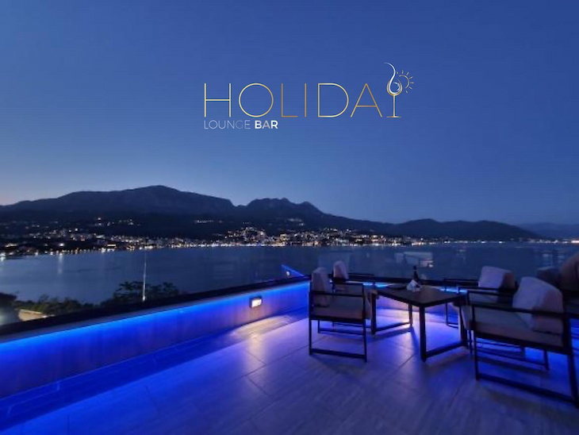
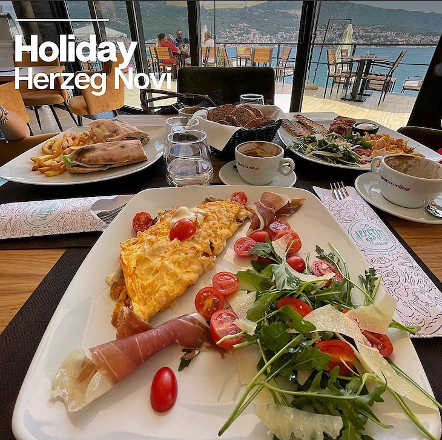
Ribarsko Selo
On the Luštica peninsula between Mirište and Žanjice beaches, Ribarsko Selo (Fishermen's Village) is one of the most authentic dining experiences on the Adriatic. Every day between 11am and noon, local fishermen arrive with the morning's catch — you pick your fish directly from a tray of iced seafood.
All ingredients are organically grown, with part of the produce cultivated in the village itself. Don't miss the house-made iced tea. You can also arrive by boat: a pontoon with berths is available at the water's edge.
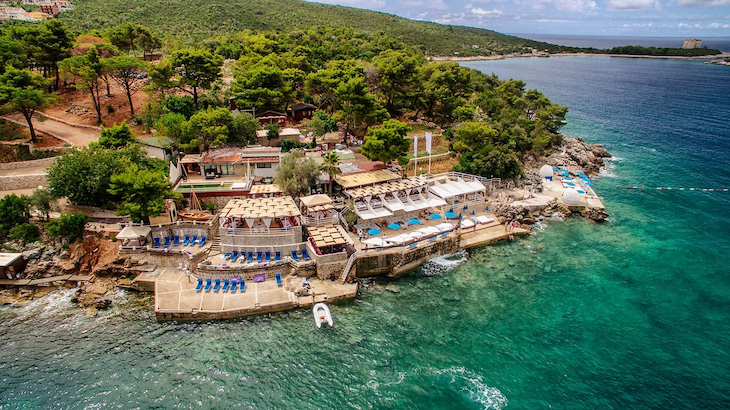
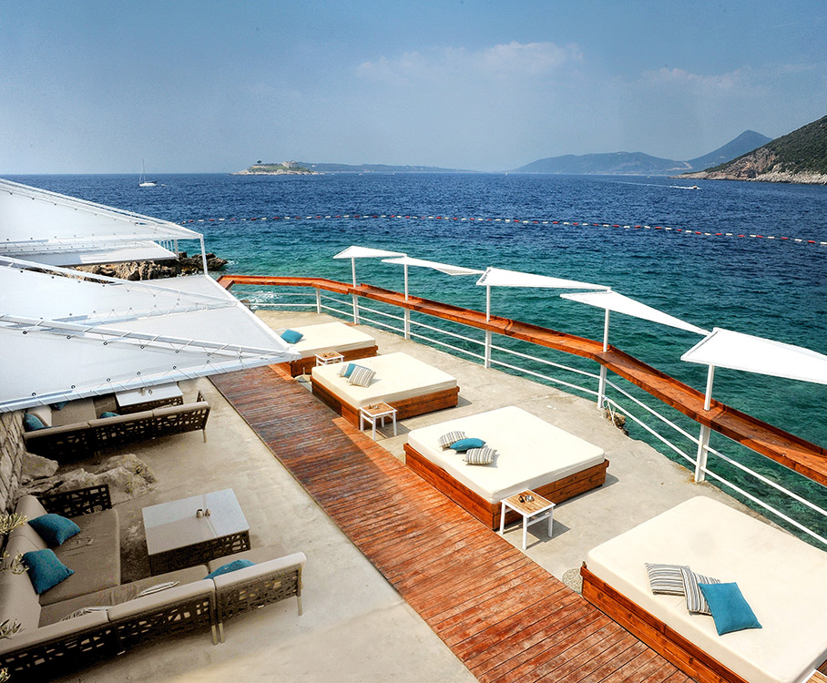
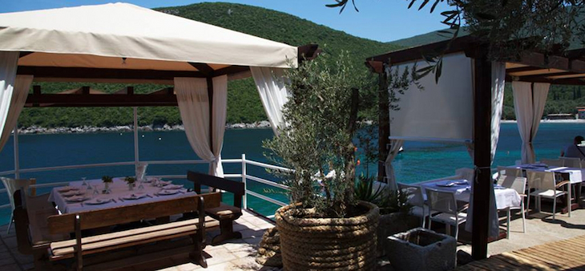
Verige 65
An all-glass restaurant at the narrowest point of the Bay of Kotor — the ideal spot to watch cruise ships, yachts and catamarans glide past within ten metres of your table. The view takes in Perast, the island of St. George and Our Lady of the Rocks, making it the most photogenic dining setting in Montenegro.
The menu fuses Mediterranean, Asian and Middle Eastern influences. Exceptional service, an outstanding wine list and a meticulously designed interior make this the restaurant for a special occasion. Ample parking (50+ spaces) and a boat berth for vessels up to 15 m available.
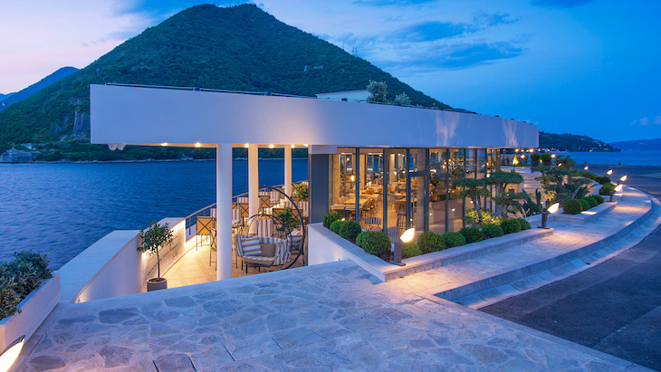
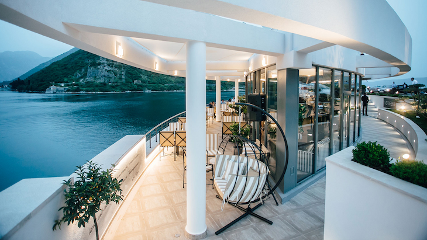
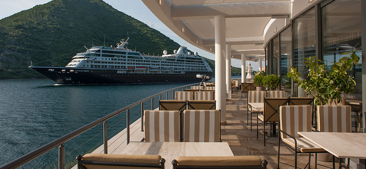
Konoba Krušo
Set directly on the Herceg Novi waterfront, Konoba Krušo offers the full traditional Montenegrin dining experience with a wide selection of national and international specialties alongside a quality wine list. Live music every weekend in winter, every evening in summer.
With 150 seats, it's perfectly set up for business lunches, cocktail receptions, weddings and birthday celebrations. Yachts of over 20 m can dock at the konoba's private pier.
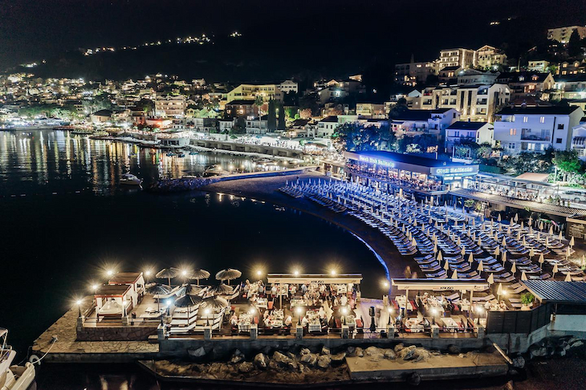
Konoba Ilijada
Along the seafront promenade in Igalo, Konoba Ilijada stands out for its authentic atmosphere. Fishing nets and wooden objects dominate the décor, and two metal sculptures of traditionally dressed Montenegrins guard the entrance. The location is unbeatable: the Mud Beach (Blatna Plaža) begins just a few steps away.
We recommend the fresh octopus, squid, crab, gambas and mussels — alongside the essential fish soup and grilled meats. Perfect for a long, relaxed summer dinner with sea views.
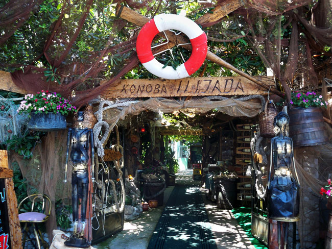
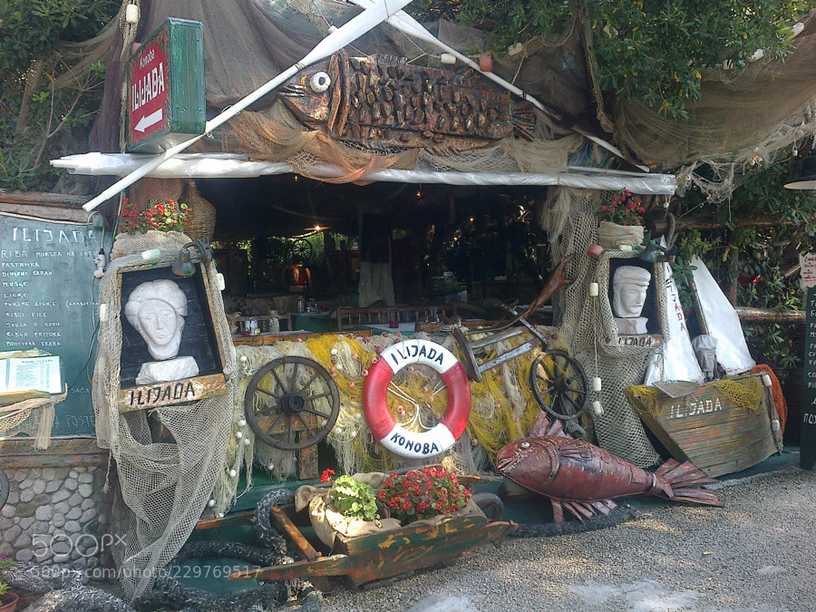
Restoran Adriatica
Hidden beneath ancient olive trees in Kamenari, next to the car ferry crossing to the Luštica peninsula. Adriatica is built around an open kitchen with a tandoor oven, large grill and fresh fish display case — rustic, unpretentious and exceptional. A terrace overlooking the bay completes the picture.
The concept blends fresh seafood and Mediterranean cooking with Montenegrin village traditions. A yacht pier is available. Not the cheapest place on the coast — but worth the splurge for one evening.
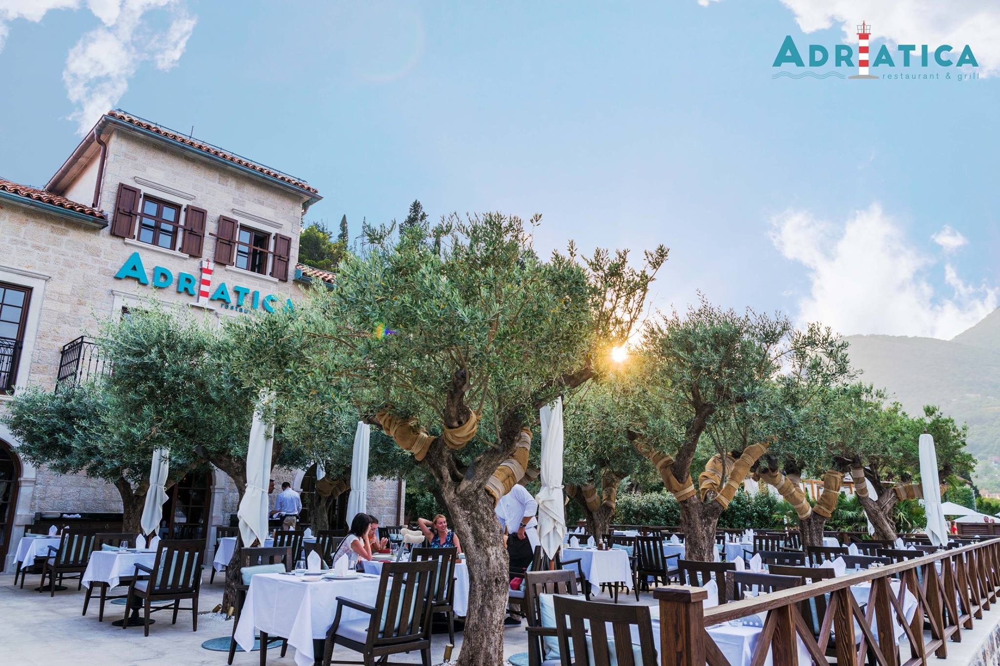
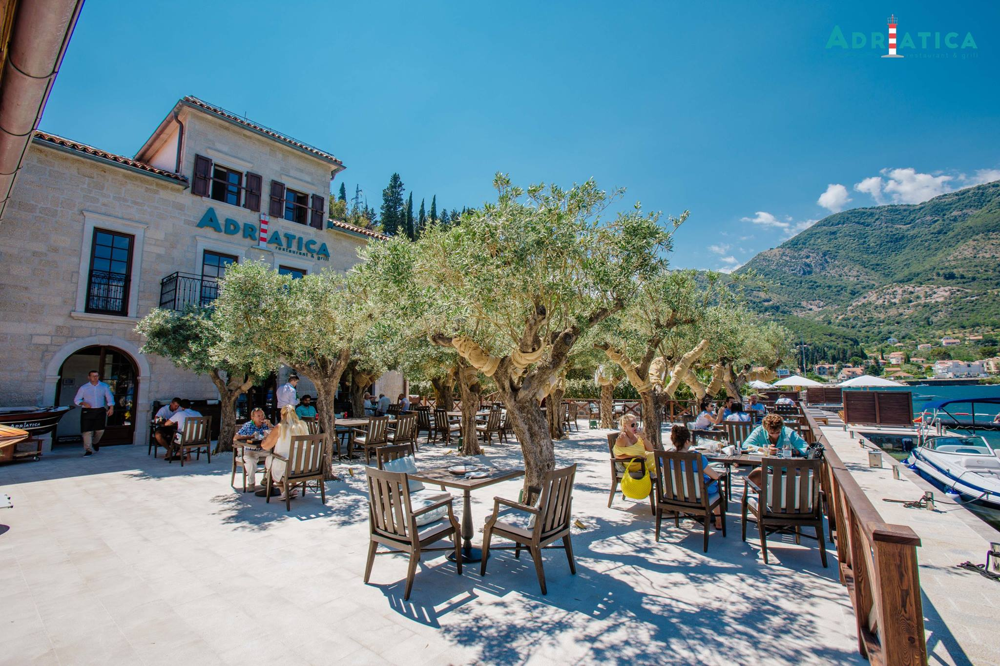
Perla Square Portonovi
Set in the heart of the exclusive Portonovi – Montenegro Essence resort, Perla Square is surrounded by olive trees and the gentle sound of a central fountain. The setting is unique in the region — a piazza atmosphere you won't find elsewhere on the Montenegrin coast.
Works equally well for a morning coffee, a business lunch, a romantic dinner or a family celebration. Reservations recommended in peak season.
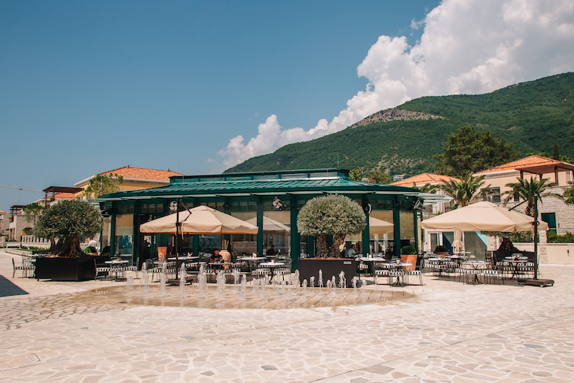
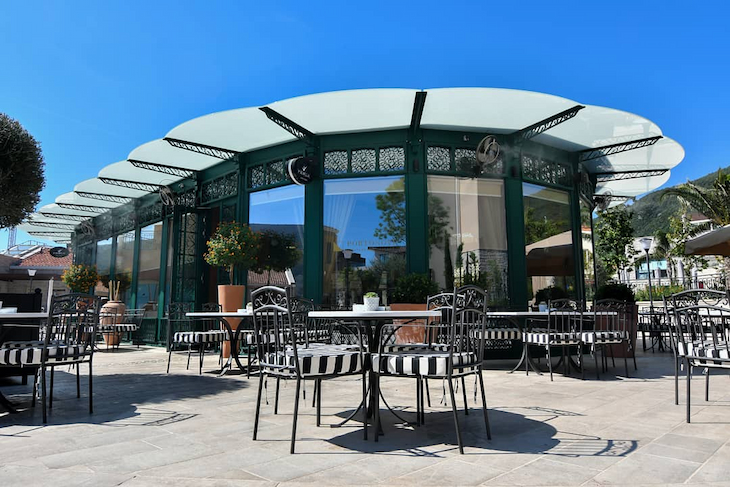
Šeki Nautilus
Café-pizzeria Šeki Nautilus is in the centre of Igalo, next to Hotel Tamaris (Obala Nikole Kovačevića 26). The terrace looks out over the entrance to the Bay of Kotor — a stunning backdrop for your morning coffee or evening meal.
The international menu covers everything from pizza to grilled meats, with a quality wine list. Open all year round and offering home delivery — ideal for guests who want restaurant-quality food without leaving the apartment.
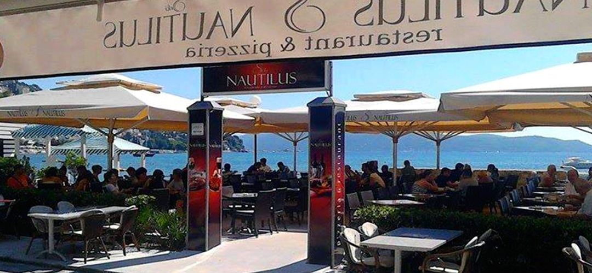